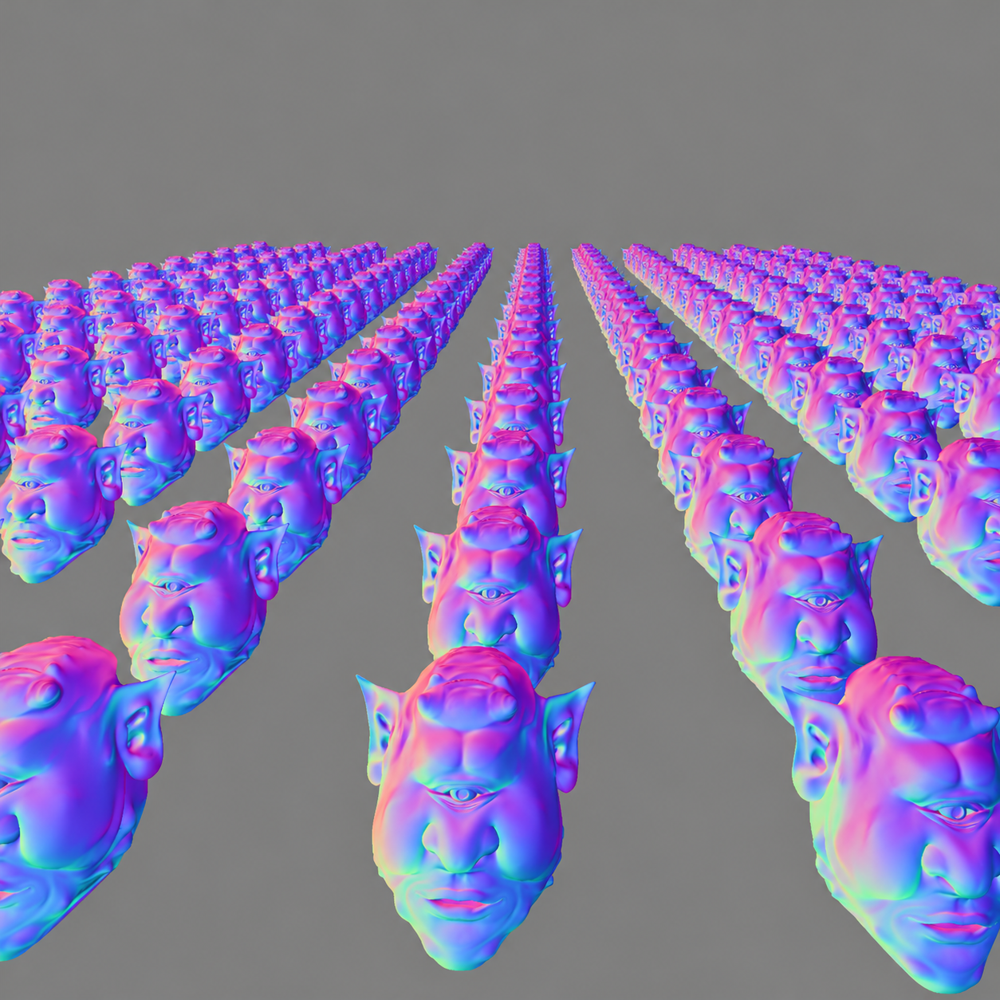

01 / NETWORK ANALYSIS
01 / NETWORK ANALYSISNetLens
Turning raw network captures into something easier to understand. A Python CLI that summarizes PCAP traffic and exports structured reports.
Computer Science undergraduate with a background in cybersecurity. I love making things, breaking down complex systems, and learning how to build them better.
A little look at what I'm building
01 / THE THINGS I MAKE
A mix of personal experiments and collaborative projects. Each one taught me something different.
01 / NETWORK ANALYSISTurning raw network captures into something easier to understand. A Python CLI that summarizes PCAP traffic and exports structured reports.
 02 / BACKEND ENGINEERING
02 / BACKEND ENGINEERINGAn indoor navigation platform. My work focuses on integrating the web applications with a C++ routing engine through a backend.
 03 / SECURITY RESEARCH
03 / SECURITY RESEARCHLearning firmware and embedded-software security assessment through a controlled lab, beginning with filesystem inspection.

04 / REAL-TIME SYSTEMSExploring real-time rendering through C++ and OpenGL, with hands-on work involving GLSL shaders, lighting, texture mapping, and visual effects.
A 2D game built with C++ and OpenGL as part of a team project, combining graphics programming with interactive gameplay.
No projects found for this filter.
02 / A LITTLE ABOUT ME
I'm studying Computer Science in Real-Time Interactive Simulation at DigiPen Singapore. Before that, I studied cybersecurity and digital forensics, which sparked my interest in what happens beneath the surface of software.
I enjoy the process of figuring things out—from tracing packets and building backend integrations to working with C++ graphics code. I care about understanding the problem, not just getting the code to run.
I'm currently exploring internship opportunities in software engineering, systems, and security.
C++, data structures, real-time graphics
Traffic analysis, firmware, secure software
APIs, services, integration
03 / MY TOOLBOX
A practical collection of languages and technologies I've used across projects and coursework.
C++ · Python · JavaScript · TypeScript · C
Node.js · Git · Linux · OpenGL · GLSL
TCP/IP · Wireshark · Kali Linux · PCAP analysis
04 / SAY HELLO
Whether it's an internship opportunity, a project, or a conversation about technology—I'd love to connect.